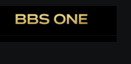

Entenda o cenário
Conheça uma situação comum e os sinais que merecem atenção.
Na Academia do Caos, situações do cotidiano viram aprendizado em cibersegurança. Entenda os riscos, reconheça golpes e transforme atenção em proteção.
01 Observar o cenário ✓
02 Reconhecer o risco ✓
03 Agir com consciência ▌
Uma mensagem urgente. Um anexo inesperado. Um pedido de dinheiro com uma foto conhecida. A segurança digital começa quando você sabe o que observar.
Nossa proposta é ensinar com linguagem acessível, humor e situações práticas. Você experimenta decisões em um ambiente simulado e entende como agir com mais segurança fora dele.
Aprenda a reconhecer golpes, proteger suas contas e cuidar das informações com oito situações que fazem parte da vida real.
Curso com exercícios práticos. Na plataforma, alunos matriculados podem concluir as avaliações e emitir certificados de participação da Academia do Caos.
Conheça uma situação comum e os sinais que merecem atenção.
Pratique em simulações, com explicações para cada decisão.
Revise os hábitos que ajudam a proteger você e sua equipe.
Conheça a proposta de capacitação em segurança digital e organize as necessidades de treinamento da sua empresa.
Sou EmpresaConclua os módulos e as avaliações para emitir seu certificado. O documento inclui seu nome, RA, título do curso e do módulo, carga horária cadastrada e código de verificação.
Um certificado para cada módulo concluído, com a carga horária definida na grade.
Ao finalizar toda a trilha, emita também o certificado do curso completo.
Documento com código de consulta, pronto para imprimir ou salvar em PDF.
Empresas parceiras que apoiam o projeto Academia do Caos.

EMPRESA PARCEIRANão. O curso piloto é introdutório e aborda situações comuns de e-mail, mensagens, contas e compartilhamento de arquivos.
Na área do aluno, você encontra os cursos liberados, seu progresso salvo no servidor, certificados, fórum e suporte. O acesso é feito com e-mail ou RA e senha. Quem ainda não tem conta pode preencher o cadastro e escolher um curso disponível.
Conclua todas as aulas e avaliações do módulo para liberar a emissão. O certificado da Academia do Caos utiliza seu nome, RA e a carga horária definida na grade, com registro eletrônico para consulta.